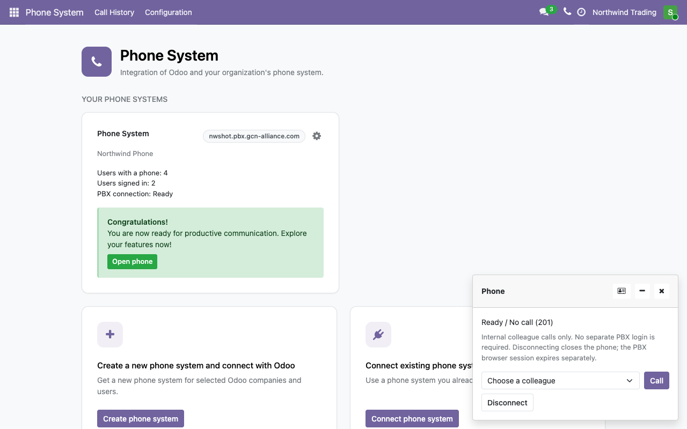
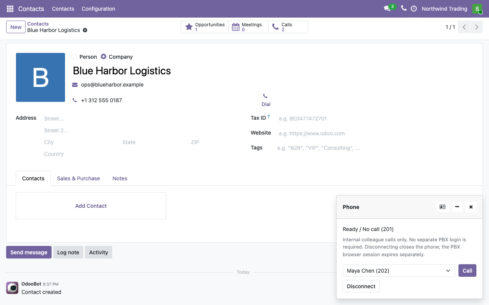
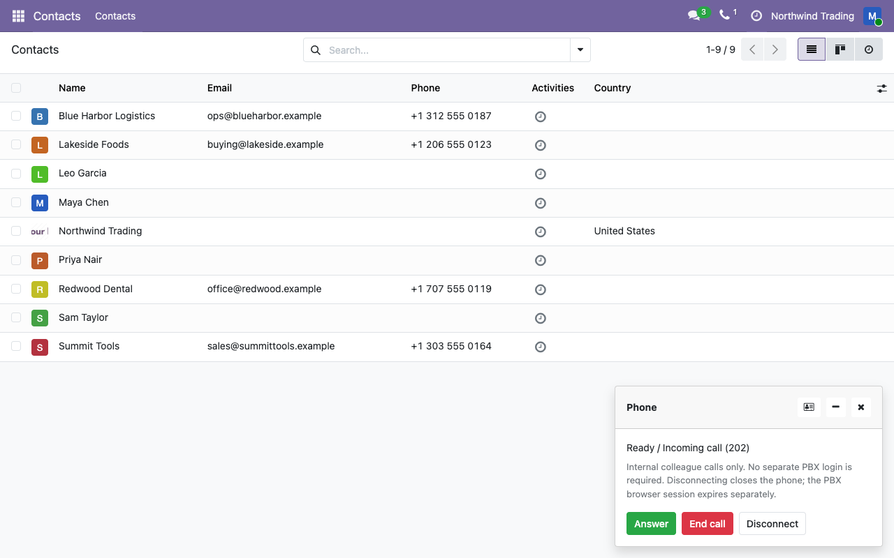
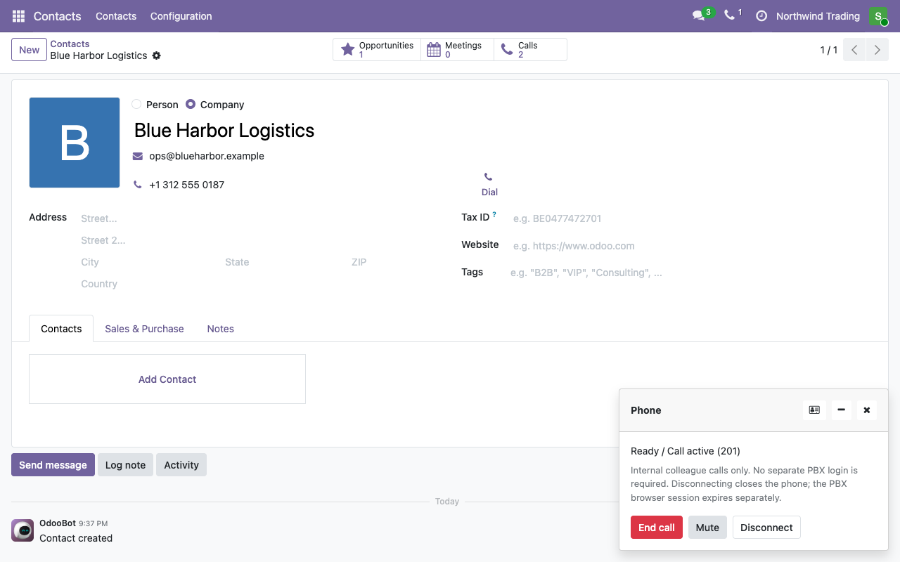
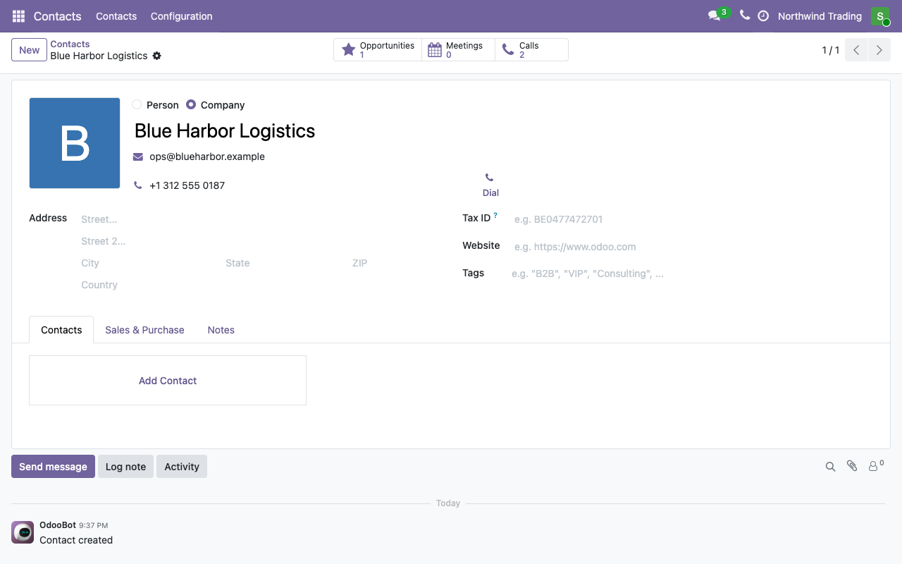
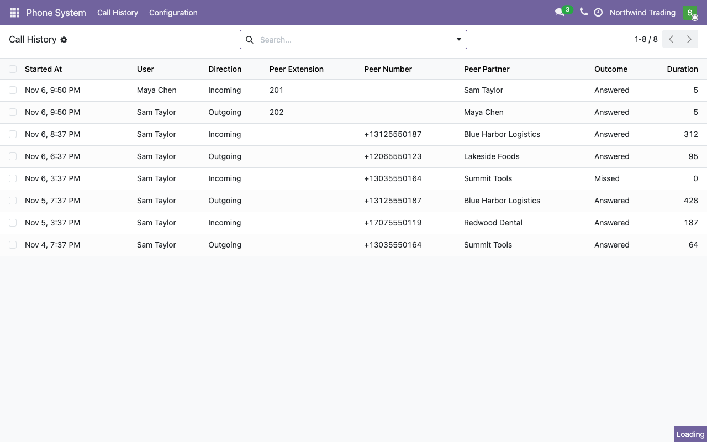
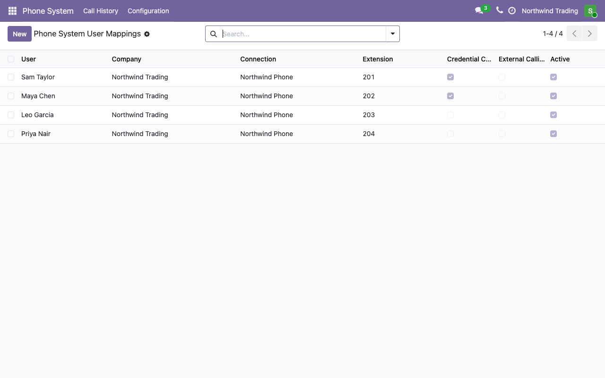
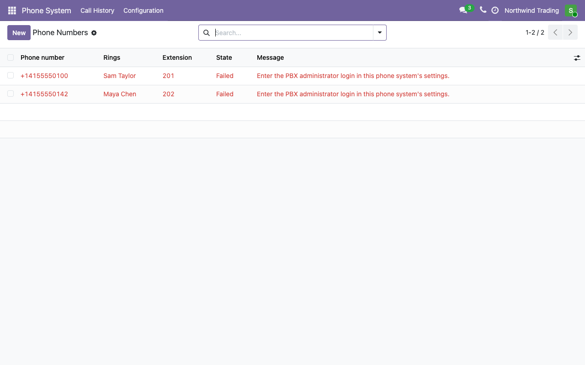

No PBX to run, no license to buy up front, no separate VoIP app. Choose a plan in Odoo, pay with Stripe, and your team calls from Odoo in about a minute.


An incoming call rings in Odoo, wherever you are.

The call keeps running while you open records.

Every phone number in Odoo gets a Dial button.

Call history shows who called, when and for how long, matched to your Odoo contacts. Users see their own calls and only the contacts they are allowed to see.

Give each user an extension.

Choose which extension each number rings.

| Users | Monthly | Yearly |
|---|---|---|
| Up to 5 | USD 29 | USD 290 |
| Up to 10 | USD 49 | USD 490 |
| Up to 25 | USD 99 | USD 990 |
| Up to 50 | USD 179 | USD 1,790 |
Prices exclude applicable taxes. Companies in Germany, Austria and Switzerland see euro prices and can pay by SEPA Direct Debit. Calls to outside numbers are billed by your SIP provider. Connecting a PBX you already run needs no plan.
No. Phone System uses only Odoo Community modules and brings its own phone and phone system.
A cloud PBX powered by Vodia, set up for you when you choose a plan. You can also connect a PBX you already run.
Not for calls between colleagues. To call outside numbers, connect any SIP trunk in Odoo.
No. Calls are matched only to the contacts each user is allowed to see in Odoo.
Cancel any time with Manage subscription in Odoo. The plan runs to the end of the paid period; the phone system and its data are deleted 30 days later, so you can save your data or undo a mistaken cancellation.
Guides and contact details: gcn-alliance.com/support.